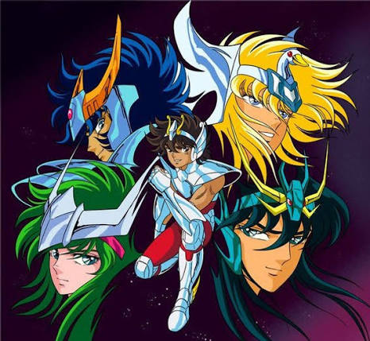
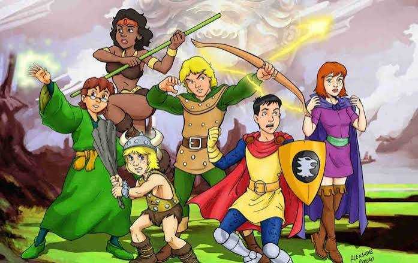
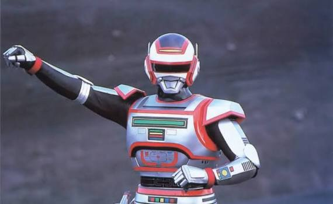
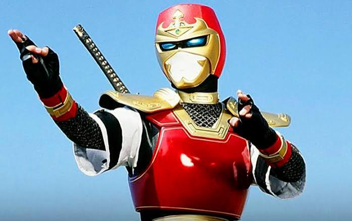
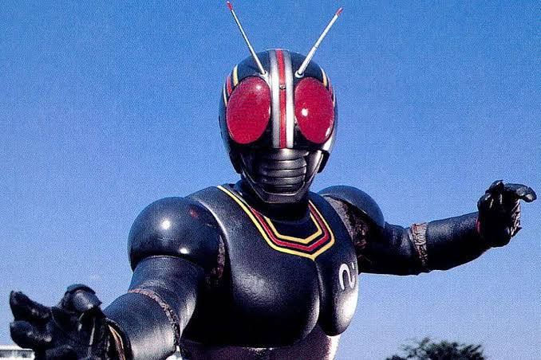
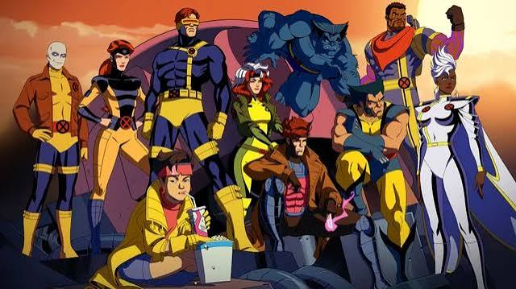
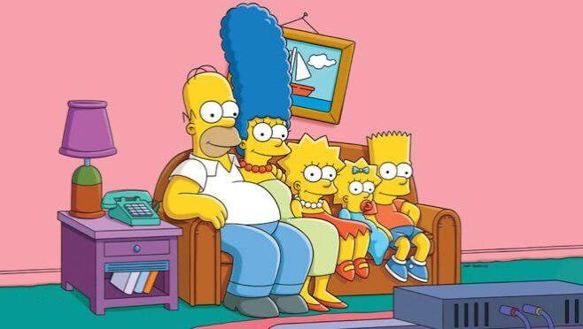

80 / 90 / 2000
HISTÓRIAS QUE ATRAVESSARAM GERAÇÕES.
Uma viagem pela TV, pelos heróis e pelas animações que transformaram tardes comuns em grandes aventuras.
80 / 90 / 2000
Uma viagem pela TV, pelos heróis e pelas animações que transformaram tardes comuns em grandes aventuras.
MEMÓRIAS EM MODO REPLAY
ANTES DOS ANOS 90
Duas produções anteriores aos anos 90 que permaneceram vivas na memória de quem cresceu cercado por fantasia e aventura.

1986

1983
FAIXA ESPECIAL
Tokusatsu, ação e personagens que marcaram memória afetiva.

METAL HERO

NINJA HERO

TOKUSATSU
O PASSADO CONTINUA PRESENTE

01
CONTINUAÇÃO
X-MEN '97
02
CULTURA POP
OS SIMPSONS


03
MISTÉRIO
GRAVITY FALLS